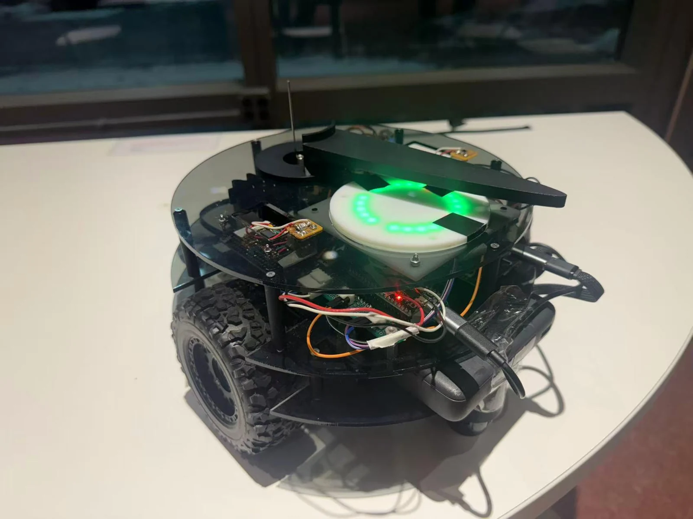
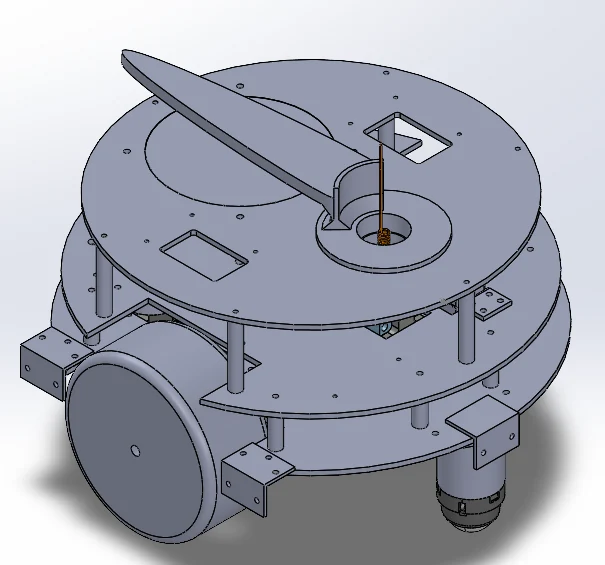
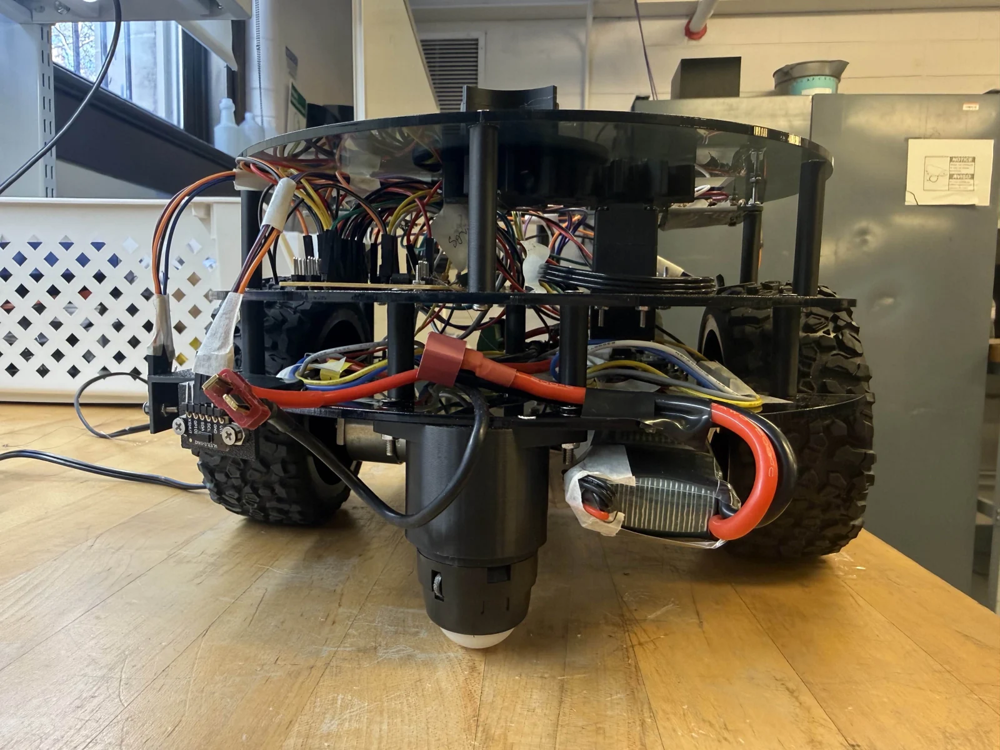
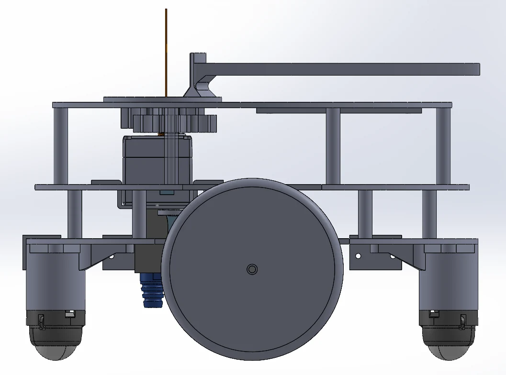
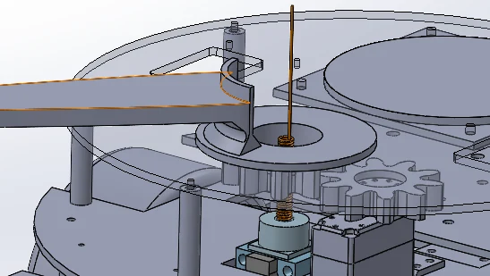
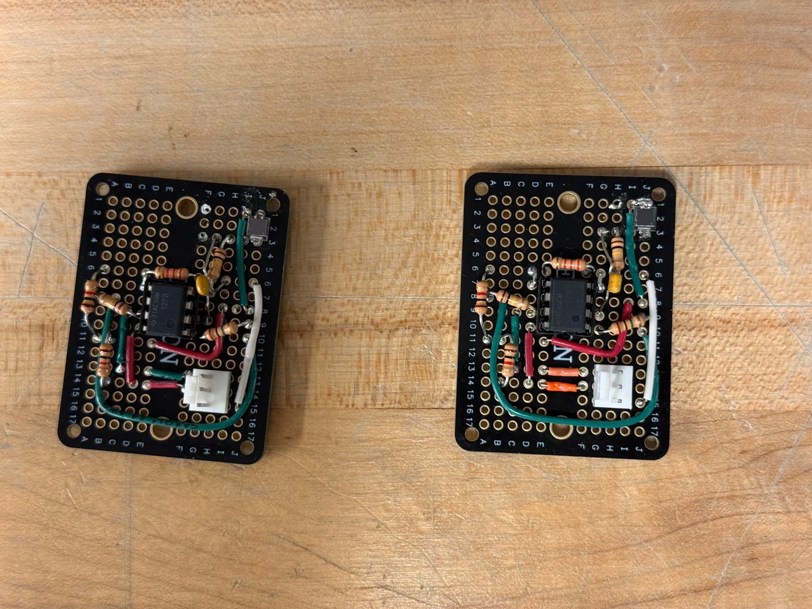
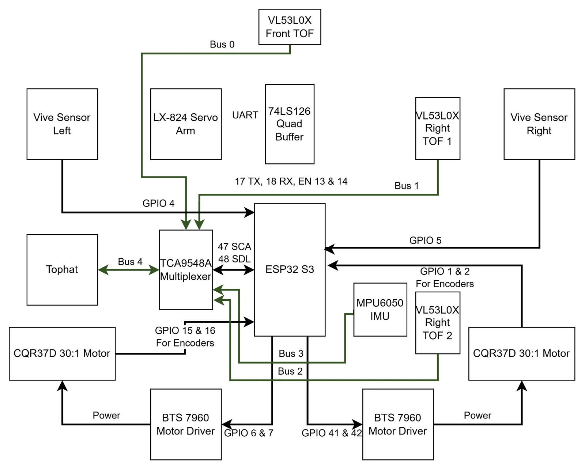

Selected project · MEAM 5100
Autonomous competition robot
Mechanical design and system integration for a robot that follows walls, navigates to field targets, and climbs competition ramps.
- Context
- Design of Mechatronic Systems
University of Pennsylvania · Fall 2025 - My role
- Mechanical design lead; chassis, suspension, packaging, controller debugging, and integration
- Status
- Completed team course project


The task and my role
We built a differential-drive robot for a field competition with ramps, towers, and contact-based targets. The design had to fit within an 11 × 11 inch footprint while leaving space for the drivetrain, electronics, sensors, and a rotating interaction arm.
I led the mechanical design and integration, including the chassis layout, drivetrain packaging, compliant caster support, and component mounts. I also worked on wall-following controller debugging and contributed to waypoint-navigation and target-interaction integration.
Team 35: Michael Duan, Louis Han, Parra Wang, and Rick Wang. The robot and competition outcomes were team work.
Mechanical decisions
A circular base with a centered drive axle
The centered differential-drive layout let the robot turn about its center without a large front or rear swing-out. We used three laser-cut acrylic levels to separate the drivetrain and power, the controller and supporting electronics, and the interaction mechanism.




Compliant caster support for ramp transitions
A rigid four-contact arrangement could unload the drive wheels on a ramp. The caster supports used 3D-printed TPU springs to allow vertical movement while the drive wheels stayed in contact with the field.
A later enlargement of the base plate reduced the available suspension travel. We revised the caster support to recover compression travel and restore ramp traversal. This was a useful example of a small packaging change affecting the entire robot.


A non-coaxial servo for the interaction arm
The arm had to rotate around the whisker-switch assembly without occupying that same axis. We placed the servo to the side and used a 1:1 pair of spur gears to drive the arm and its 90° shield.


Mechanical design and iterations: MEAM 5100 Final Report, Mechanical Design section.
Making the systems work together
Wall following used a front time-of-flight sensor to detect approaching walls and two side sensors to estimate distance and alignment. For point navigation, two Vive receivers provided a position and heading reference.
The final task logic combined these measurements rather than relying on one everywhere. Wall following handled longer field traversals, then Vive-based navigation aligned the robot with a target. Median filtering helped reject unstable Vive readings, particularly near the field edges.




Sensor placement was a mechanical problem as well as an electrical one. The original Vive mounting below transparent acrylic caused unstable readings. Moving the photodiodes to a separate exposed mounting board resolved that interference in our setup.
Demonstrations
At the second graded evaluation, the team demonstrated Vive waypoint navigation, repeated Nexus interaction, wall following, and low-tower capture. High-tower capture was demonstrated later during the competition after adjusting the approach to the ramp.
The two YouTube links come directly from the final report’s video appendix. Their availability and embedding permissions are controlled by YouTube and the video owner.
What I took from it
Most of the difficult failures happened between subsystems: a chassis change limited suspension travel, a sensor mount altered the optical path, and a supplied servo required a different power arrangement. Testing each component in isolation did not reveal all of those interactions.
The project strengthened my interest in robot mechanisms and physical testing. Mechanical layout was not just a way to hold the controller and sensors; it changed what those systems could accomplish.
Project documentation: Team 35’s MEAM 5100 Final Report, December 2025.